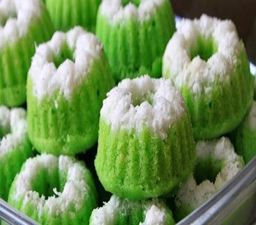

Bahan:
- 2 btr telur ayam
- 120 gr tepung terigu
- 100 ml santan (suhu ruang)
- 1/2 sdt SP
- 70 gr gula pasir
- Secukupnya pasta pandan
- Secukupnya sukade
- Sejumput vanilli
Cara Membuat:
- Siapkan cetakan dan olesi cetakan menggunakan minyak makan kemudian taburi sukade sesuai selera dan jangan lupa panaskan kukusan juga yaa.
- Kocok telur, gula dan SP menggunakan kecepatan tinggi hingga kental dan ketika batang mixer di angkat, adonan tidak menetes.
- Pelankan kecepatan mixer lalu masukan tepung terigu sedikit demi sedikit bergantian dengan santan nya hingga habis dan rata.
- Masukan sejumput vanilli dan aduk hingga rata kemudian masukan pasta pandan sesuai selera.
- Tuang adonan ke cetakan dan kukus kurang lebih 5 menit